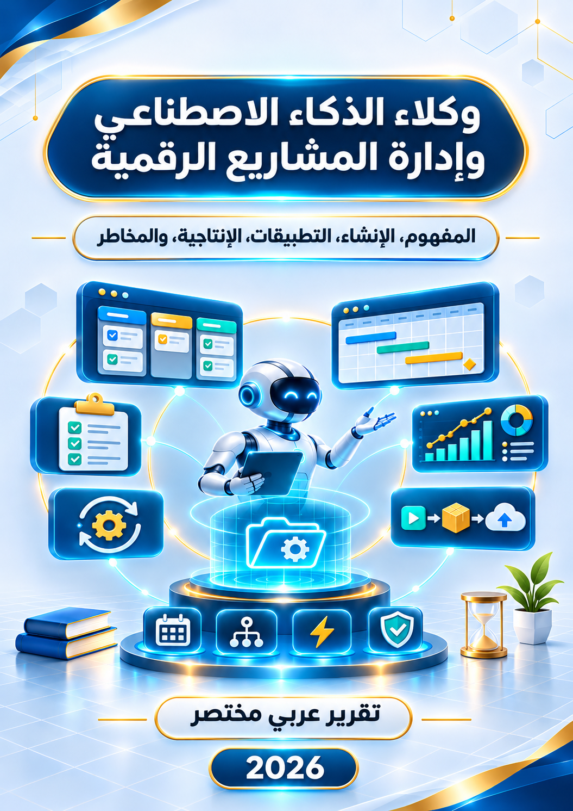
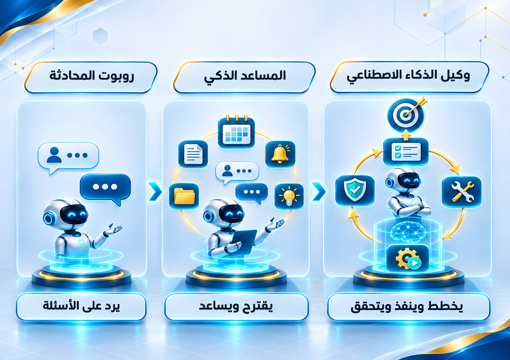
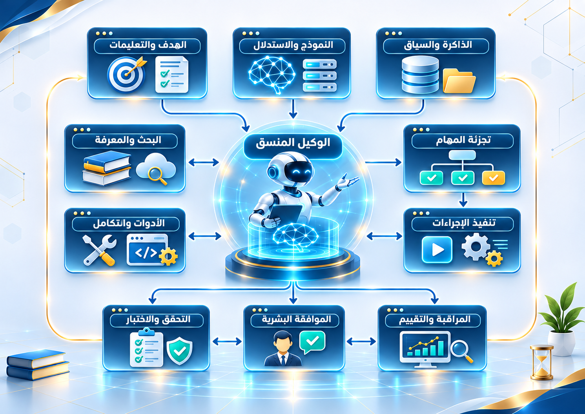
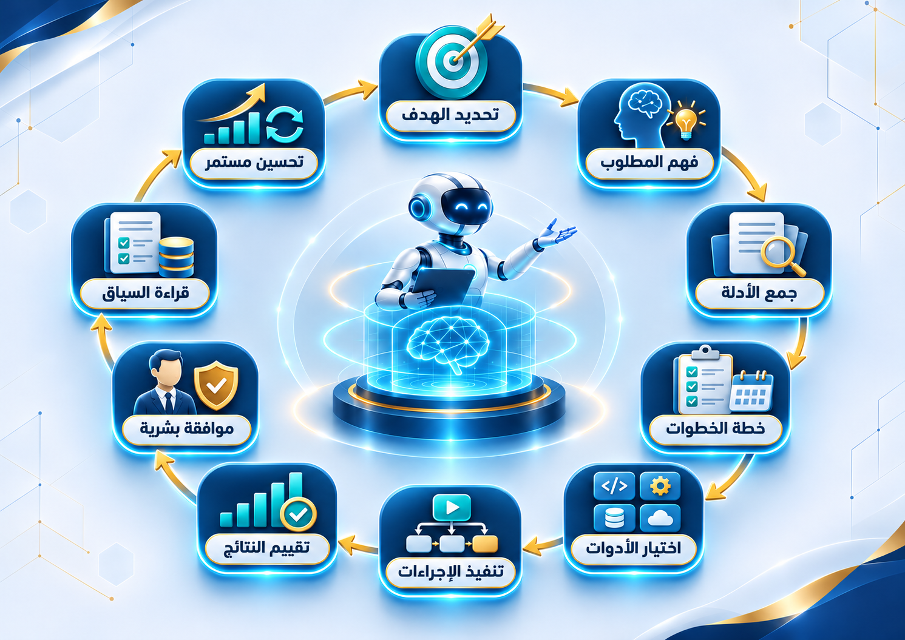
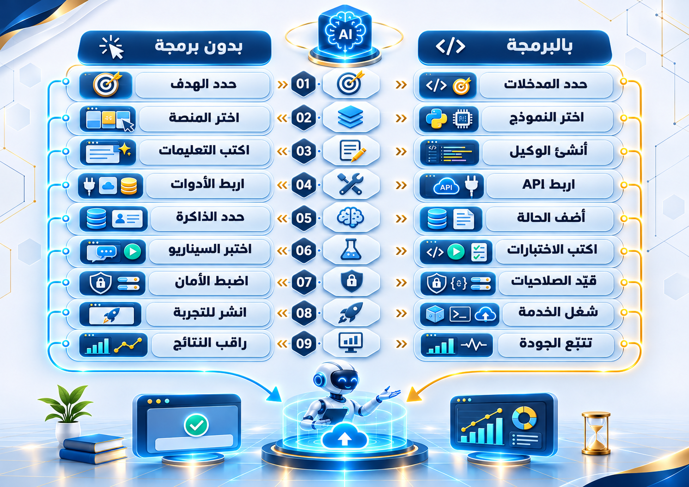
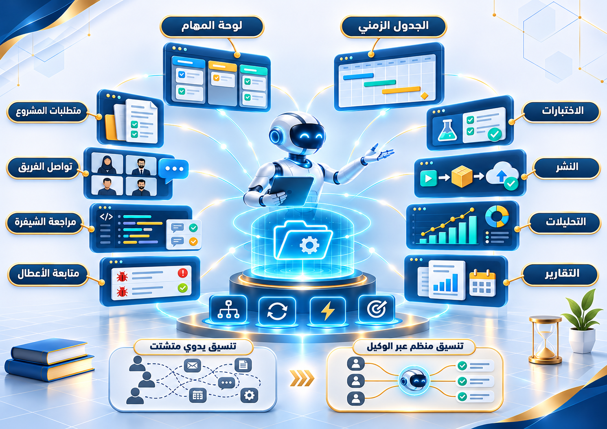
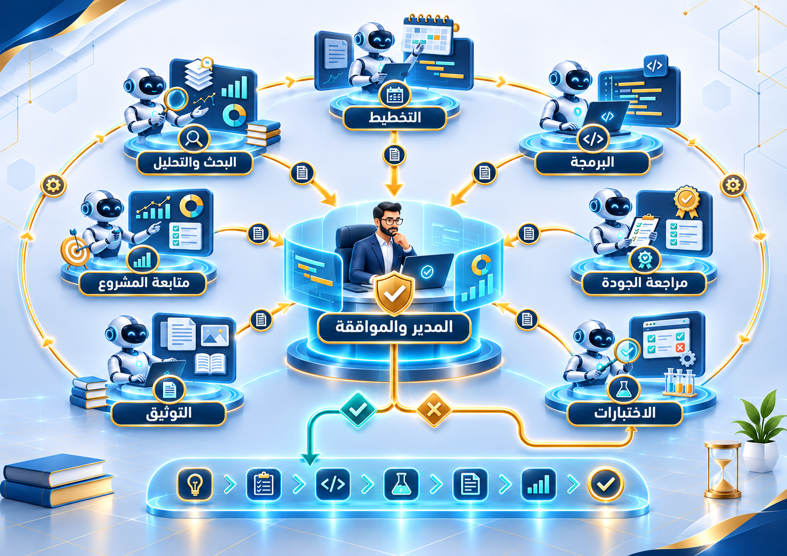
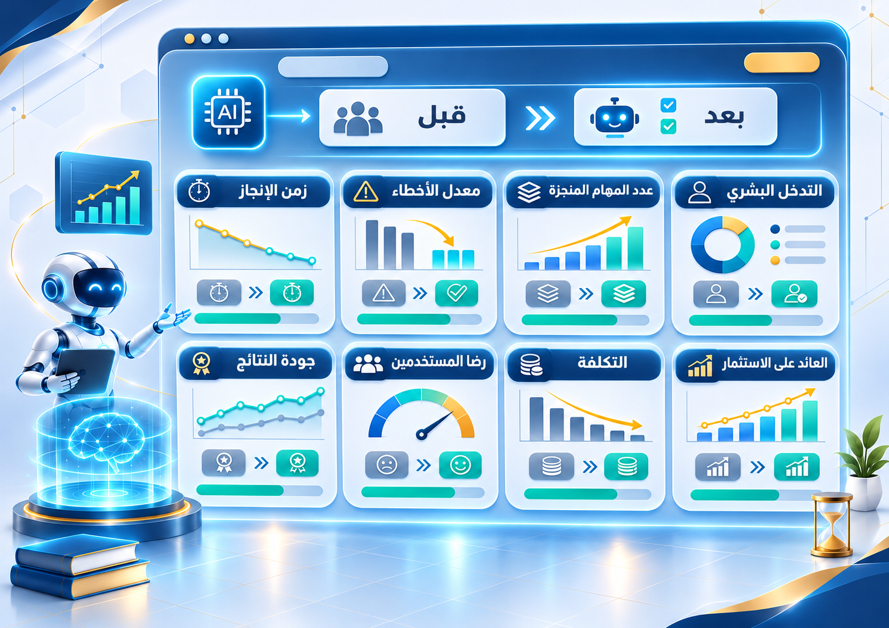
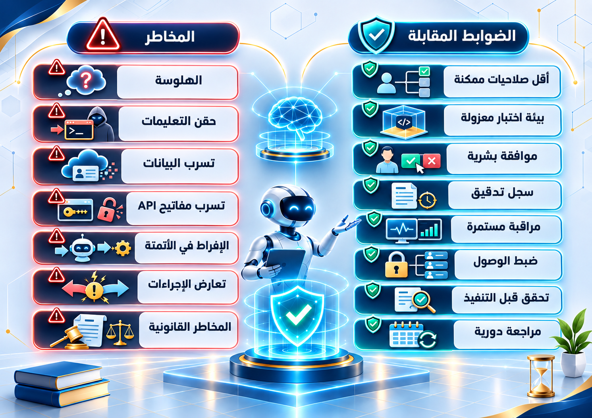
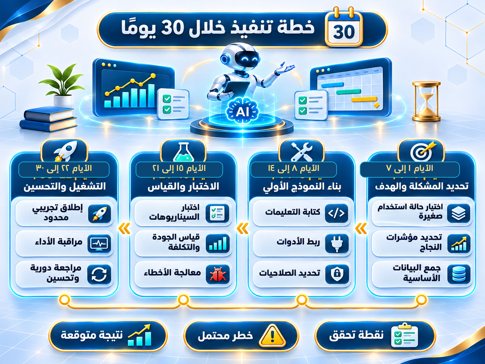

الوكيل الذكي (AI Agent) برنامج يتلقى هدفاً ويختار، ضمن حدود صلاحياته، خطوات وأدوات لتنفيذ المهمة والتحقق من الناتج. قد يستخدم نموذجاً لغوياً وذاكرة وأدوات بحث وواجهات API. لكنه ليس موظفاً بلا أخطاء، ولا تُمنح له صلاحية التنفيذ الحساس تلقائياً. 1,2
تلخيص التذاكر والتقارير، تصنيف الأعطال، البحث في الوثائق، وتوحيد حالة المشروع.
بيانات صالحة، مهمة محددة، اختبار دقيق، أدوات محدودة، مراجعة بشرية.
مهمة ثابتة بسيطة يمكن تنفيذها بقواعد واضحة، أو بيانات خاصة لا يمكن حمايتها.
| الصفحات | ماذا ستجد؟ |
|---|---|
| ٣–٥ | التعريف والفرق والمعمارية ودورة العمل. |
| ٦–٧ | إنشاء وكيل دون برمجة وباستخدام Python. |
| ٨–٩ | إدارة المشاريع الرقمية وفريق الوكلاء. |
| ١٠–١١ | قياس الإنتاجية ودراسة تطوير تطبيق Android. |
| ١٢–١٣ | الأمن وخارطة بدء عملية خلال ٣٠ يوماً. |
| ١٤–١٥ | التوصيات والمصطلحات والمصادر. |
كل المخططات توضيحية، وليست لقطات شاشة من منصات فعلية. مثال التكاليف في هذا الدليل افتراضي وموسوم بوضوح.

| النظام | ماذا يفعل عملياً؟ | مثال |
|---|---|---|
| روبوت محادثة | يرد على سؤال محدد؛ غالباً دون إجراء خارجي. | شرح رسالة خطأ. |
| مساعد ذكي | يساعد ويقترح، وقد يستخدم أدوات عند الطلب. | تلخيص اجتماع وإعداد مسودة. |
| وكيل ذكي | يخطط ويستخدم أدوات ويتحقق من النتيجة. | قراءة تذاكر، فرزها، إعداد تقرير موثّق. |


| المرحلة | معيار النجاح |
|---|---|
| فهم الهدف | نتيجة مطلوبة ومصدر بيانات واضحان. |
| التنفيذ | كل إجراء داخل الصلاحيات والوقت والميزانية. |
| التحقق | دليل من النظام الأصلي: حالة تذكرة أو نتيجة اختبار. |
| التوقف | نجاح مثبت، أو تجاوز حد، أو حاجة لقرار بشري. |

المثال أدناه يقرأ حالة مشروع تجريبية ثابتة عبر أداة محددة؛ لا يغيّر ملفات أو يرسل رسائل. يتطلب تثبيت openai-agents وضبط متغير البيئة OPENAI_API_KEY. 3
from agents import Agent, Runner, function_tool
@function_tool
def get_project_status(project_id: str) -> str:
"""Read-only demo status for one test project."""
if project_id != "demo":
return "Unknown project"
return "3 tasks open; 1 test failed; 2 tasks done"
agent = Agent(
name="Project Analyst",
instructions=(
"Read status using the tool. Summarize in Arabic. "
"Do not invent facts or perform write actions."
),
tools=[get_project_status],
)
result = Runner.run_sync(
agent, "لخّص حالة المشروع demo واذكر المخاطر"
)
print(result.final_output)| التغيير | الإجراء الصحيح |
|---|---|
| إضافة قراءة | قيّد المستودع/المشروع، وأعد روابط المصدر. |
| إضافة كتابة | موافقة قبل التعديل، وفرع منفصل، وسجل تدقيق. |
| إضافة تشغيل دوري | مجدول مستقل، حدود كلفة، إعادة محاولة محدودة. |
| تقييم الأداء | اختبارات متكررة على عيّنة معلومة الإجابات. |

| المهمة | إسهام الوكيل | الأثر أو الحد |
|---|---|---|
| التخطيط | تحويل المتطلبات إلى قائمة مهام. | الموعد والتقدير يُراجعان بشرياً. |
| المتابعة | جمع حالة GitHub والتذاكر والاختبارات. | الإشارة إلى مصادر الحقيقة. |
| التطوير | اقتراح إصلاح ومراجعة تغيّر الشيفرة. | لا دمج في الفرع المحمي دون مراجعة. |
| التقارير | تلخيص المنجزات والمعوقات دوريّاً. | تقليل النسخ والتجميع اليدوي. |

التخطيط يعرّف التذكرة → البحث يراجع الأدلة → البرمجة يقترح تغييراً في فرع مستقل → الجودة والاختبارات يتحققان → التوثيق يحفظ النتيجة → المدير يوافق على الدمج أو يطلب إعادة العمل.

افترض إعداد ٨٠ تقريراً شهرياً، وزمن التقرير يدوياً ٤٥ دقيقة وبعد الوكيل ١٥ دقيقة شاملة المراجعة. أجر الساعة ٢٠ دولاراً، والكلفة الإضافية للوكيل ٣٨٠ دولاراً شهرياً.
الوقت الموفّر شهرياً: (٤٥−١٥) × ٨٠ ÷ ٦٠.
المنفعة الصافية: ٤٠ × ٢٠ − ٣٨٠.
عائد افتراضي: ٤٢٠ ÷ ٣٨٠ × ١٠٠.
مشروع افتراضي: فريق صغير يطوّر تطبيق Android، لديه تذاكر GitHub واختبارات CI وملفات توثيق. الهدف: إصدار نسخة تجريبية قابلة للفحص من دون دمج تغييرات غير مختبرة.
| المرحلة | الطريقة التقليدية | الطريقة المدعومة بوكيل |
|---|---|---|
| استلام طلب | يقسم المدير الطلب يدوياً. | يقترح الوكيل مهاماً وأولويات، ويعتمدها المدير. |
| تطوير | مطور يقرأ الخطأ ويكتب التعديل. | وكيل بحث يجمع الأدلة؛ وكيل كود يقترح تغييراً منفصلاً. |
| التحقق | يقرأ الفريق سجلات CI واحداً واحداً. | وكيل اختبار يلخص الفشل ويربطه بالتشغيل. |
| التوثيق | نسخ يدوي لتغيرات الإصدار. | وكيل وثائق يعد مسودة قابلة للتدقيق. |
| التسليم | اعتماد الإصدار ونشره بشرياً. | تنبيه بالمخاطر؛ لا نشر إلا بإذن بشري. |
main.

| الفترة | المخرج الواضح | بوابة قرار |
|---|---|---|
| الأيام ١–٧ | عملية محددة، ٢٠ مثالاً، وزمن يدوي أساسي. | هل البيانات صالحة للاستخدام؟ |
| ٨–١٤ | وكيل يقرأ ويقترح، مع سجل نتائج. | هل جودة الإجابات مقبولة؟ |
| ١٥–٢١ | تكامل واحد آمن واختبارات فشل. | هل يرفض الأفعال الممنوعة؟ |
| ٢٢–٣٠ | تشغيل محدود ومقارنة تكلفة/جودة/زمن. | توسعة أم تعديل أم إيقاف؟ |
المتاح فعلياً: استدعاء الأدوات، إدارة الحالة، الربط بواجهات API، حفظ أثر التنفيذ، والموافقات البشرية في أطر عديدة. المتوقع ازدياد موثوقية المهام الطويلة والتنسيق بين وكلاء متخصصين، لكن ذلك لا يلغي المحاسبة البشرية أو مخاطر الخطأ. 3,4,9
إذا كانت الشروط ثابتة والبيانات منظمة.
إذا احتجت فهم نصوص واستخدام أداتين أو ثلاث.
فقط عند استقلال الأدوار وقابلية اختبار كل مخرج.
| المصطلح | المعنى العملي |
|---|---|
| AI Agent | وكيل | يقرر خطوات وينفذ أدوات نحو هدف. |
| LLM | نموذج لغوي | يفهم/يولد لغة لكنه قد يخطئ. |
| Tool Use | استخدام أدوات | استدعاء وظائف خارج النموذج. |
| RAG | الاسترجاع المعزز | إحضار مستندات ذات صلة قبل الإجابة. |
| Human-in-the-Loop | اعتماد بشري عند نقطة حساسة. |
| Prompt Injection | نص خبيث يحاول تغيير تعليمات الوكيل. |
| ROI | عائد الاستثمار | صافي المنفعة ÷ التكلفة × ١٠٠. |
جرى الاستناد إلى وثائق ومراجع رسمية. الروابط قابلة للنقر، وقد تتغير صفحات التوثيق مع تحديث الخدمات. تاريخ الاطلاع: ١٢ نوفمبر ٢٠٢٦.